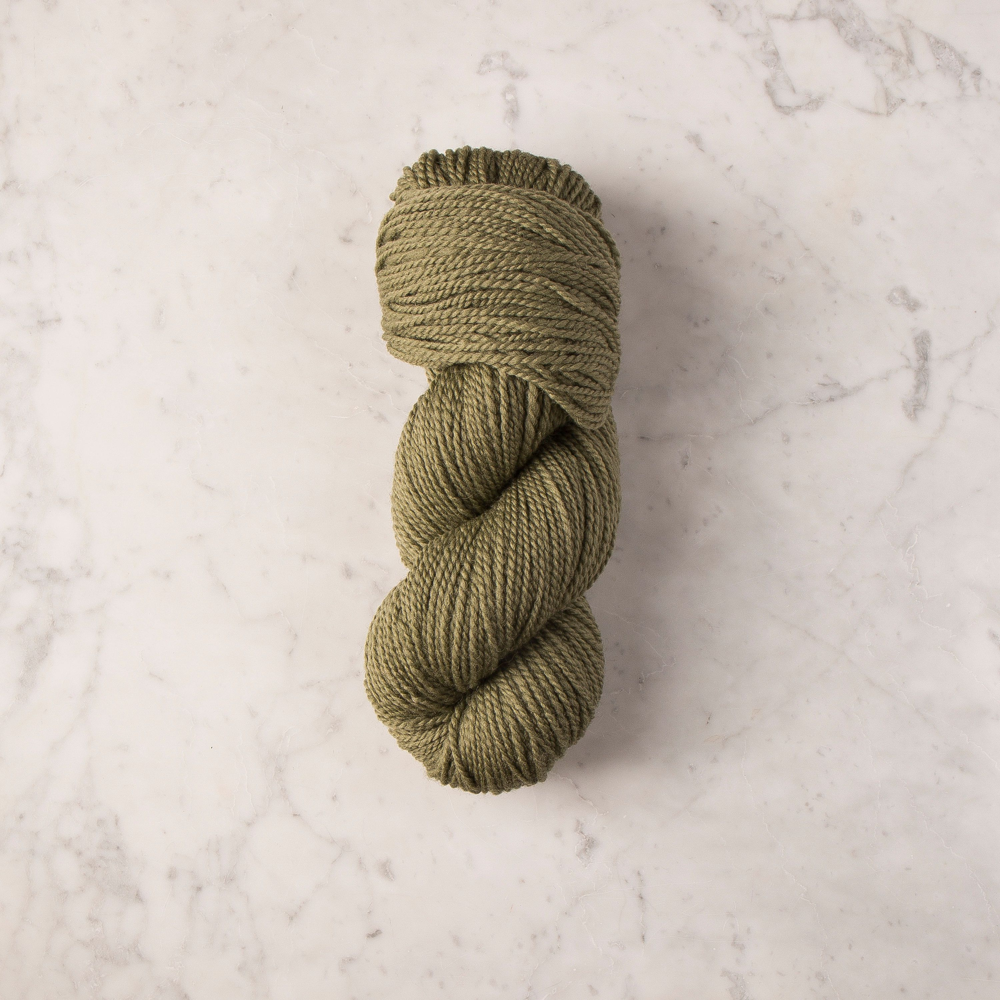

In today’s world, people have been using a large amount of plastic. In fact, plastic has been used in almost everything and in an uncontrollably rate. Plastic is becoming a threat to us, animals, and our oceans. This leads to researchers and scientists trying to find other materials to substitute plastic for our everyday usage.

One of the substitute materials that is being used now is stone wool. This material is from natural igneous rock and it’s formed after lava cools. Then, this material is being combined with a steelmaking byproduct that’s called a slag which becomes a fibre. The manufacture of stone wool is located in Europe, North America, and Asia. This material is being used in London and Hong Kong. One of the way that they use stone wool is by putting stone wool against the wall when they build a house or a building. Using this material will not only help us get a solution to our plastic problem, but it also gives us benefits. By using this material instead of plastic it can help boast unique properties, including fire resilience, acoustic and thermal capabilities, water repellency and durability in extreme weather conditions. Stone wool not only gives people those benefits, but it could also save their lives because stone wool gives extra measure of safety when wildfire and floods increase in its frequency and severity. That’s because stone wool is fire resistant and that can slow down a spread of fire which can give people more time to escape when there’s a fire. Not only it gives safety properties, but it also helps keep a house cooler because they have thermal properties from tiny pockets of air that keeps hot airs out. Also, stone wool contains 75 percent recycled content unlike plastic only gets 9 percent of it recycled. This is important because when something is recycled more instead of making more it helps create less harm to the environment such as carbon dioxide.

Another material that can substitute plastic is palm leaves. Palm leaves could be a substitution for plastic because they could be form into an appropriate form that could be used the same way as plastic. Some of the stuff that’s made from palm leaves are plates ,purses, hats, and buckets. The places that you can find products that’s made from palm leaves is in Asia, Africa, and Unites States. Also, the good thing about using palm leaves instead of plastic is that creating products with palm leaves doesn’t require much water and energy. Due to large quantity of plastic being made, it caused us to create a large amount of carbon dioxide. T add on, making one pound of plastic creates 3 pound of carbon dioxide. At the same time, large amount of water, energy usage, and amount of carbon dioxide is being created is affecting our planet. That means having reduced in amount of usage in these substances by using palm leaves not only help us reduce plastic usage, but also help our planet to become a earth.
These are some of the materials that people could substitute plastic with and it’s really important to do so. This is connected to today’s world because right now people is still looking for materials to substitute plastic with and at the same time to be beneficial for us as human beings and our planet. Perhaps if we can cut down the usage of plastic by half, then it would help us, ocean, animals, and the earth in dramatic amount. SAVE THE WORLD!!!